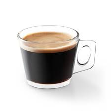

Rețete și Preparate din Cafea
Cappuccino
Un preparat italian clasic, cappuccino-ul combină espresso-ul cu lapte spumat în proporții egale.
| Ingredient |
Cantitate |
| Espresso |
1 shot (30 ml) |
| Lapte |
120 ml (spumă densă) |
| Frișcă |
Opțional |
| Pulbere de cacao/scorțișoară |
Pentru decor |
Notă: Proporțiile pot varia ușor în funcție de preferințele personale și de mărimea ceștii. Pentru o spumă densă și cremoasă, încălzește laptele cu abur până la 65-70°C.
Caffè Latte
Mai puțin intens decât cappuccino, latte-ul conține o parte espresso și trei părți lapte, cu un strat subțire de spumă.
| Ingredient |
Cantitate |
| Espresso |
1 shot (30 ml) |
| Lapte |
150-180 ml (spumă ușoară) |
Notă: Caffè latte este cunoscut pentru gustul său cremos și echilibrat. Pentru o spumă ușoară și fină, încălzește laptele până la aproximativ 60°C.
Espresso

Cea mai simplă băutură espresso este o singură doză de espresso. Pentru a face unul, folosiți un singur filtru și aproximativ șase până la opt grame de cafea măcinată 1 fin. Este servită într-o ceșcuță de tip demitasse.
| Ingredient |
Cantitate |
| Cafea măcinată |
7-9 grame (măcinare fină) |
| Apă |
25-30 ml (pentru un shot) |
Notă: Pentru un espresso perfect, este important să folosești cafea proaspăt măcinată și un espressor bine întreținut. Temperatura apei ar trebui să fie între 90-96°C.
Moca

Aceasta este cafea dulce, constând dintr-un latte cu sirop de ciocolată sau pudră de cacao.
| Ingredient |
Cantitate |
| Espresso |
1 shot (30 ml) |
| Lapte |
120 ml (spumă densă) |
| Sirop de ciocolată |
1-2 lingurițe |
| Frișcă |
Opțional |
| Pudră de cacao |
Pentru decor |
Notă: Poți personaliza mocha-ul adăugând alte arome, cum ar fi caramel sau mentă.
Latte Macchiato
Aceasta este o variantă a versiunii espresso, care implică mai mult lapte. Pentru a face un latte macchiato, turnați o treime până 1 la o jumătate de ceașcă de lapte aburit într-un pahar și apoi adăugați un shot de espresso deasupra.
| Ingredient |
Cantitate |
| Lapte |
150-200 ml (spumă densă) |
| Espresso |
1 shot (30 ml) |
Notă: Latte macchiato este apreciat pentru straturile distincte de lapte, espresso și spumă. Pentru un aspect vizual atractiv, toarnă espresso-ul încet peste lapte.
Americano

Un americano are o putere similară cu o ceașcă de cafea neagră obișnuită, dar se face prin adăugarea de apă fierbinte la o singură sau dublă doză de espresso.
1
| Ingredient |
Cantitate |
| Espresso |
1-2 shot-uri (30-60 ml) |
| Apă fierbinte |
60-90 ml |
Notă: Americano este o alegere excelentă pentru cei care preferă o cafea mai ușoară și mai puțin amară decât espresso-ul. Poate fi servit într-o ceașcă mare sau într-un pahar.
Flat White
Originar din Australia și Noua Zeelandă, Flat White este o băutură care combină espresso-ul cu lapte spumat fin, într-un raport echilibrat.
| Ingredient |
Cantitate |
| Espresso |
1-2 shot-uri (30-60 ml) |
| Lapte |
120-150 ml (spumă fină) |
Notă: Flat White se deosebește de cappuccino prin spuma mai fină și raportul mai mare cafea-lapte. Este servit de obicei într-o ceașcă de dimensiuni medii.